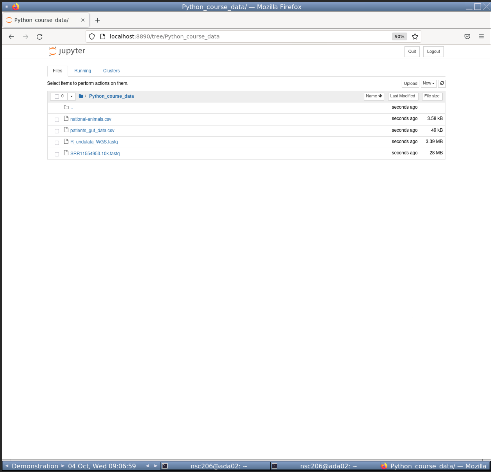
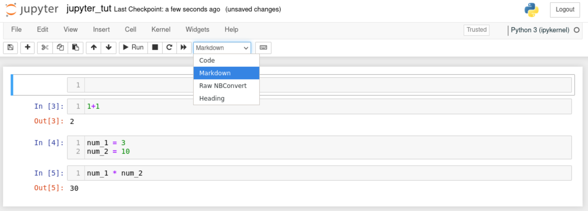
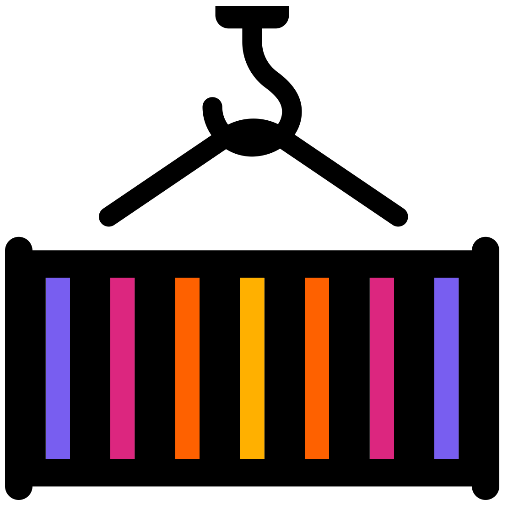
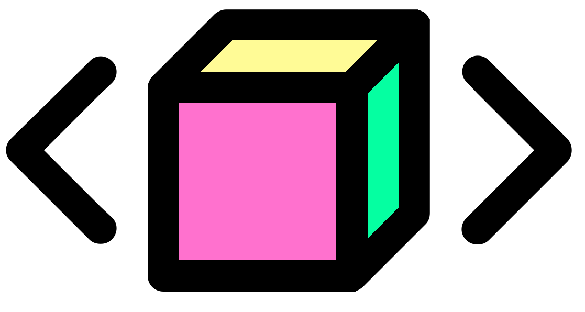
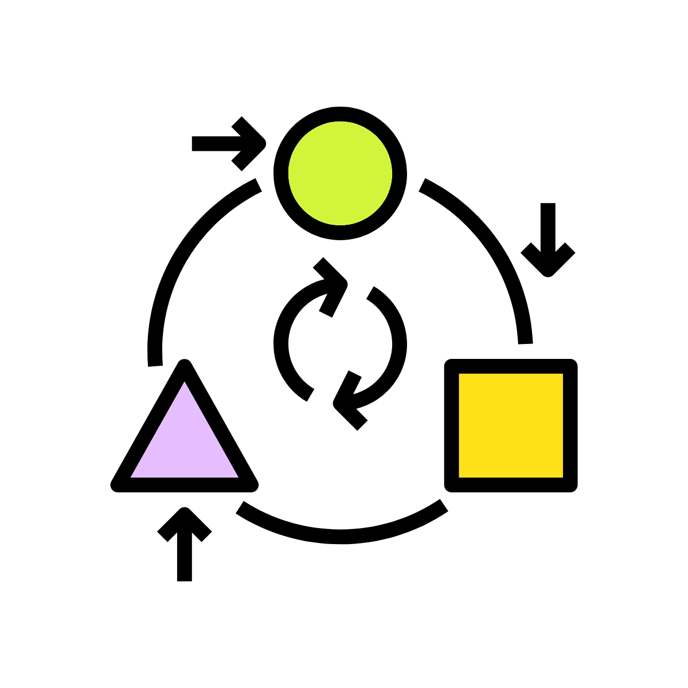
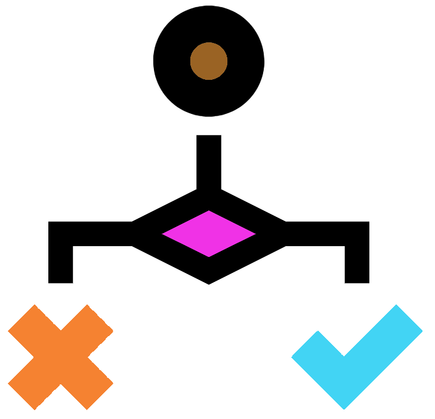
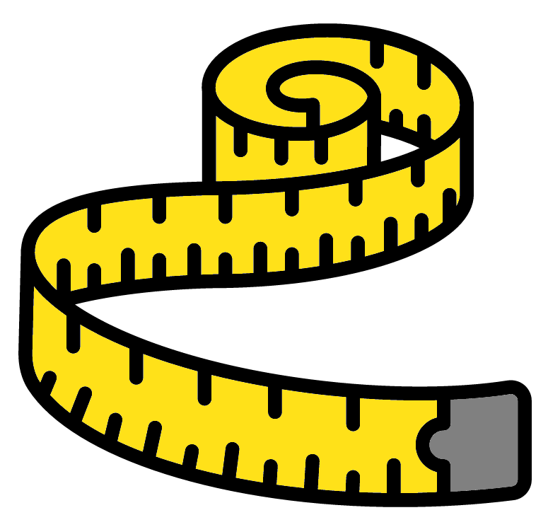
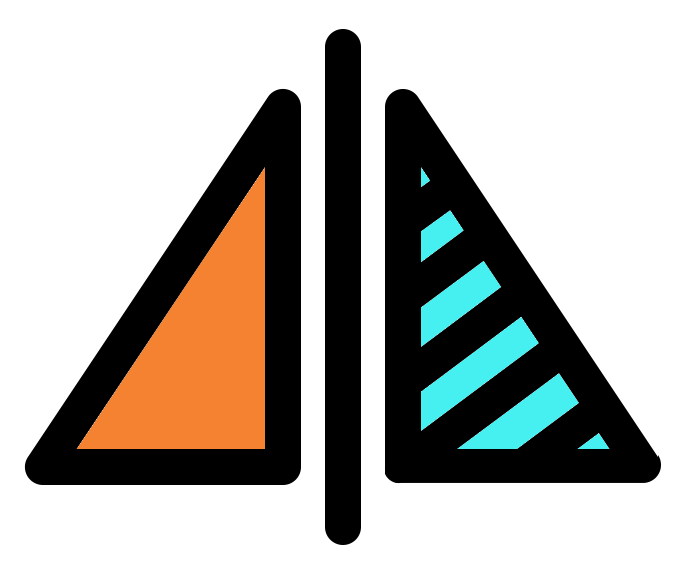

Python for Bioinformatics
Graeme Fox & Matthew R. Gemmell
December, 2023
1 Introduction

Python is one of the most popular programming languages for bioinformatics and data analysis in general. It is a very flexible language with countless applications in the manipulation and processing of data files. This course is aimed at Python beginners and will give you transferable skills to manipulate your own data. The course will also provide you experience in Python modules tailored specifically for bioinformatics and genomics analyses.
Sessions will start with a brief presentation followed by self-paced computer practicals guided by an online interactive book. The book will contain theory, practice code, and exercises. Multiple choice questions will help reinforce what you have learnt throughout the book.
At the end of the course learners will be able to:
- Create, edit, run, and save python scripts with Jupyter-notebook.
- Understand and use fundamental python concepts including operators, annotations, variables, and variable classes.
- Utilise a variety of python functions and methods.
- Store and manipulate data within lists, sets, and dictionaries.
- Produce If and else statements to print out different results based on logical conditions (True or False).
- Carry out the same task on multiple items with loops.
- Read in and write out fastq files with the biopython library.
- Filter sequences from fastq data.
- Use logical operators to test multiple conditions at once.
There are supplementary materials including the use of the Pandas for table based data and Matplotlib for plot production. These can be run through after the course by the learner.
Table of contents

This work is licensed under a Creative Commons Attribution-NonCommercial-ShareAlike 4.0 International License.
2 Python for bioinformatics
This is a course to explore and learn the fundamentals of programming in the Python language with a specific focus on how this tool can be used in bioinformatics.
Python is a high level programming language enabling very rapid development of applications or scripts. It has a simple, easy-to-read syntax and is very accessible as a first or second programming language. Python has many pre-built modules and packages, allowing you to import lots of functionality, and avoid the need to “re-invent the wheel”.
Python is favoured by many programmers for the flexibility it affords and the speed at which it can be written.
This course assumes absolutely no Python experience or prior programming experience in any other language.
Over the next two days you will:
- Learn the fundamental components of a Python script
- Discover how to write, edit and run a Python script
- Understand and use variables
- Understand and choose data structures
- Use control structure (conditions and loops)
- Learn string manipulation
- Read and manipulate DNA sequence data
- Be able to read input files and write output files
- Have a plan on what to do next to further your knowledge.
We will cover the theory behind Python concepts and terminology. Python code is designed to be human-readable and understanding the underlying processes is important. There will be lots of opportunity to practice writing Python. Practice will involve typing and running Python code whilst working through the workshop materials. This will allow you to see the output of Python commands and help you to understand how Python works.
2.1 Materials Covered in the Course
After learning some of the basics of Python we will import some DNA sequence data and perform some common types of analyses. The focus is on learning the theory and the ways in which Python can be used, rather than the specifics of the analysis. Hopefully you will take away new skills that can be applied to your own data.
In the supplementary material, we import and work with a different form of data often encountered by biologists; the comma delimited file.
2.2 Inputting Commands
Commands are in the following font and colour and should be run in the VNC window following the link provided to you by the course coordinators. (Do not try to run the following, however.)
2.3 Pseudocode

Sometimes to illustrate how a concept works, we will illustrate it with some pseudocode. This is a way of representing a concept in simple terms that can be understood without knowing the correct programming terminology or syntax.
Do not try to run the pseudocode as Python will not understand it.
3 Cluster Introduction

3.1 Logon Instructions
For this workshop we will be using Virtual Network Computing (VNC). Connect to the VNC with a browser by using the webVNC link you were sent.
You will now be in a logged-in Linux VNC desktop with a terminal window visible. You will see something as below.If you do not see something similar please ask for assistance.
If the VNC is taking up too much/little space of your browser you can use the zoom of your browser to adjust the size. Ensure you can see one whole terminal.
3.2 The Terminal Window
In our case the terminal window looks like the picture below. We are using the terminal window as our shell to interpret our commands to the kernel. Depending on your system and preferences it may look different.
You’re now ready to start the workshop!
3.3 Load workshop data
Before we get started, we need to copy across some data files to analyse later in the workshop.
In the terminal window, issue the following commands to copy the data into your account:
3.4 Mamba

This workshop requires some programs. These can be difficult to install. Instead we have used Mambaforge to install the programs including Jupyter-notebook. To learn more about Mambaforge and how to create your own environment please see the appendix.
To set-up your environment for this workshop please run the following code (you must include the full stop and space at the front of the command).
You will have successfully activated the environment if you now see (python) at the start of your command prompt.
This indicates you are now in the mamba environment called python created by the instructor.
If you are interested in the use script you can look at its contents.
Tip: press q to quit less.
For more about mamba and how to create your own python environment please see the appendix
4 Jupyter

Jupyter-notebook is a nice browser based method to write, edit, and run code. It was initially created for Python coding, but has since branched out to many other languages, such as R.
We are using it in this workshop for a variety of its properties:
- It is popular and well maintained.
- It is lightweight. Other heavier weight programs would struggle in our HPC due to the graphical and CPU load.
- It is interactive and displays code output.
- It allows for easier annotation, editing, and debugging than the command line.
- It provides a graphical interface for changing directories and choosing files.
Before carrying out any analysis we will go through a quick tutorial of jupyter-notebook.
4.1 Open Jupyter-notebook
The first step is to open jupyter-notebook. Run the below command in your (python) environment.
This will open jupyter-notebook in firefox. We won’t need to access the linux terminal in this book anymore. Leave the terminal running jupyter-notebook and full screen your firefox so you should see something like below.
You may need to zoom out with your browser so you can see the full webVNC window.
- Chrome: Click on the three dots in vertical line ( ) on the top left for a dropdown menu which includes zoom options.
- Edge: Click on the three horizontal lines ( ) on the top left for a dropdown menu which includes zoom options.
- Firefox: Click on the three dots in horizontal line ( ) on the top left for a dropdown menu which includes zoom options.
4.2 Changing directories
To move around the directories you can click on directory names.
Click on “Python_course_data” to move into that directory. You will then see the below showing the files in the directory.

4.3 Create notebook
The next step is to create a python notebook.
- Click on the “New” button towards the top right, right of the “Upload” button.
- From the dropdown click Python 3 (ipykernel).
This will open up a new Python notebook like below.
4.4 Cells and code
Jupyter-notebook uses cells (the gray boxes) to separate code. This is very useful to compartmentalise our code.
There will already be one cell. Within the cell, type in the below commands.
When pressing enter in cells it will create a new line. To run all commands in a cell press CTRL + enter.
Run your current cell and you should see something like below.
4.5 Create new cells
You can create new cells by 2 different means.
- Press the
+button on the tool bar (between the floppy disk and scissors ). This will add a cell below your currently selected cell. - Click on the
Insertbutton and use the dropdown to add a cell above or below your currently selected cell.
Tip: Hover over the toolbar icons to display a text based description of its function.
With that knowledge add a second cell below the first cell. Add the following code to your second cell but do not run it.
Tip: Notice there are green lines around your selected cell.
Insert a third cell and add the following code to it. Do not run the code.
4.6 Running code
Try to run the code in the third cell. There should be an error as we have not created the objects num_1 & num_2. We have only written the code for these objects but not run them.
We can run all the code in a notebook starting from the first cell to the last cell.
To run all cells from the start:
- Click on the “Cell” button.
- Click “Run All” from the drop-down options.
You should then see something like the below in your notebook.
There is no output printed for cell 2 because we are assigning variables. However, the correct output for Cell 3 is below it. This is because the variables were assigned in cell 2 before cell 3 was run.
4.7 Saving the file

As with many good coding interfaces we can save our notebook.
First we should rename the file. Rename the notebook to “jupyter_tut”:
- Click on the name of the notebook, currently called “Untitled”.
- This is at the very top of the notebook, right of the Jupyter logo.
- A pop-up called “Rename Notebook” will appear. Change the Name to “jupyter_tut”.
- Click “Rename”.
Now we can save the file. Two methods to save are:
- Click the floppy disk on the toolbar.
- Click on the “File” button. Click “Save and Checkpoint” from the dropdown options.
4.8 Title cells with markdown
We will be using multiple notebooks in this workshop. We will also have multiple sections per notebook. It will be useful to create header cells with markdown to create visual separation of the different sections.
To add a header cell to the top of our notebook:
- Create a new cell at the top of the notebook.
- Click on the “Code” drop down and select the “Markdown” option.
- Do not choose the “Heading” option as it no longer works.

- Add the following to the “Markdown” cell to create a first level header.
- Ensure you have a space between the
#and header text (“Tutorial”).
- Ensure you have a space between the
Great, we can now add nice headers in our notebooks. Save the notebook once more before carrying on to the next section.
You won’t need to know more about Markdown but if you are interested please see the Markdown guide.
4.9 Close the notebook
To close the notebook:
- Click on “File”.
- From the dropdown options click “Close and Halt”.
When you are back in the file explorer page you may not yet see the new file you saved. If so, you will need to refresh the page with the Refresh button towards the top right.

With that quick tutorial of jupyter-notebook we can start our community analysis in the next chapter.
For more info on jupter-notebook please see the appendix.
4.10 Video tutorial
5 Scripting in Python
5.1 Introduction to commands and scripts
There are two important components to programming in Python; the commands that are committed by the user, and the interpreter which receives and implements the commands.
Each command can be thought of as a single instruction and these can be added together into a series of steps, called a script. Think about how a cooking recipe is often presented:
- Break a few eggs
- Make an omelette
These are two distinct commands, but together they form a script for how to transform raw eggs into an omelette.
5.2 Issuing commands
In this section we will learn and use some Python commands.
Create a new notebook in your “Python_course_data” directory. Rename it to “01-Fundamentals” and save it.
Convert the first cell to a Markdown cell. Add the following to the cell to create a 1st and 2nd level header.
5.2.1 Print
The first command we will use is print(). This will print the desired text. Type and run the below commands in 2 new Code cells.
Note: Python is very particular about braces/brackets and quote marks.
Below each cell you will see the specified text.
5.2.2 Working directory

The command getcwd() stands for “get the current working directory”. This command comes from the Python module os. We therefore need to import the module and specify it when running the command (os.getcwd()).
Run the below in a new cell.
This will return something like: ‘/pub14/tea/nsc206/Python_course_data’ (your nsc number will be different though).
print() and os.getcwd() are nice commands to start with but don’t appear very useful, yet. We will see later how they can be used effectively.
5.3 A note on indentation
Indentation refers to any spaces or tab characters at the beginning of a line of code. Indentation helps readability of code. It defines code blocks dedicated to a single purpose. However, indentation in Python is mandatory and the interpreter will give an error if the indentation is wrong.
Jupyter-notebook attempts to auto indent code.
However, you still need to take care that the level of indentation in the script matches that in the workbook exactly.
5.3.1 Tabs vs spaces
There is an active debate about whether tabs or spaces are more appropriate for indentation.
For reference, one tab = 4 spaces.
You can use either tabs or spaces, but you cannot use them interchangeably! Use one and keep consistent with your use.
Do not enter the below, this is just an illustration of how three levels of tab indentation looks in a script.
5.4 Scripting recap MCQs

Wonderful! That is the end of the scripting chapter. Now time for some reinforcement.
Choose the correct option to complete the below sentences:
- The command ________ gets your current working directory.
- The command ________ prints text.
- The module ________ is needed for the
getcwd()command. - ________ can be used for indentation in Python.
6 Python Fundamentals

This chapter covers some of the fundamental concepts of scripting in Python. An understanding of how to use operators, variables, and functions will give a good grounding in how the language works and allow you to develop your own methods and code.
You definitely do not need to memorise all the information here as all of these concepts will be explored more in the rest of the tutorial. The best way to learn how various aspects of the Python language works is by doing rather than by reading.
Consider coming back to this page later if you want to remind yourself of how a particular operator works or how to define a function.
We’ll continue to use our “01-Fundamentals” notebook. Within it create a new Markdown cell with the following headers:
6.1 Operators

Python allows the use of the usual arithmetic operators and follows the traditional rules of mathematical precedence (BODMAS).
The main mathematical operators are:
+(addition)-(subtraction)*(multiplication)/(division)**(power/exponent)//(Floor division)%(modulo operator. Find the remainder after dividing 2 numbers)
For each code block below create a code cell, enter the code, and run it. This will demonstrate the code output and give you some practice.
For convenience you can can create a bunch of empty cells and then use the up and down arrow keys to move to other cells. This requires knowing the two different interaction modes.
- esc mode: This mode allows you to move up and down between cells. You are in esc mode if the highlighted border of your current cell is blue (leftside) and grey.

- command mode: This mode allows you to type in the cell. You are in command mode if the highlighted border of your current cell is green.

Press enter when on a cell in esc mode to enter command mode. This allows you to start typing in the selected cell.
When you run code (ctrl + enter) in command mode you will then enter esc mode.
Be careful! If you press a number key whilst in esc mode you will change the cell to a markdown cell. Additionally, you will change the first line to a header line equal to the number you pressed. I.e. if you pressed 2, the following would be added to the start of the first line of the cell: ##.
6.3 Variables

Variables are used to store information which can then be referenced or manipulated later. It is useful to label data with descriptive names which are easily read by humans. You can think of a variable as a ‘container’ to hold a piece of information.
Variables are assigned a value using the equals (=) character.
Variable name rules:
- Must start with either a letter or an underscore
- Cannot start with a number.
- Must only contain alphanumeric characters (and underscores)
- No punctuation such as full stops, quotes, commas, colons, etc are allowed.
- They are case sensitive.
Python supports several classes (or types) of variables including strings, integers, floats, and booleans.
In a new Markdown cell add the following:
6.3.1 Strings

Strings are used to store alphanumeric text. A string is defined by enclosing the text with either single ('text') or double quotes ("text").
In the below code we define two string variables, and then retrieve them again by using their name, or identifier.
As before, for each code block below create a code cell, enter the code, and run it. Do this for all future code examples.
#Assign string variables
DNA_string = "GCACAAACC"
amino_acids = "ARG VAL TRP"
#Call the DNA_string variable
DNA_stringYou will notice that you can use your variables in the same cell you created it in, or in a different cell. As long as you have run the code that creates/assigns the variable you can use it elsewhere in the same notebook.
6.3.2 Integers

Integers are used to store whole numbers. These should not be declared with quote marks otherwise they will be stored as a string.
Create the following markdown cell:
Create and run the following code cells:
6.3.3 Floats (floating point numbers)

Floating point numbers are used to store real numbers (I.e. a number written with a decimal point dividing the integer and the fractional parts).
Create a new markdown cell with the following:
Run the following code:
6.3.4 Booleans
Booleans are a special type of variable that can represent one of two values: True or False. You can compare any two values in Python and get a result of either True or False.
- To check if two values are equal we use double equals:
== - To check if two values are not equal we use:
!= - Greater than (
>) or less than (<) also work.
Create a new markdown cell with the following:
Run the following code:
6.4 Classes of variable

Every variable in Python has a class. These are the characteristics we described above:
- String (
<class 'str'>) - Integer (
<class 'int'>) - Float (
<class 'float'>) - Boolean (
<class 'bool'>)
Unlike some other languages, you do not need to tell Python which class a variable should have. Python will try to figure it out based on the value assigned.
Create a new markdown cell with the following:
You can check the class of a variable by passing it to the type() function:
6.5 Transforming variables

Variables can be transformed from one class/type to another provided the value can be coerced into the new data type (I.e. you could not transform a string of text to a floating point number).
Create a new markdown cell with the following:
To transform a float to an integer use the int() function (note the loss of precision):
To transform an integer to a string use the str() function:
You can transform a numeric string to an integer:
You can also transform to a floating point using float():
6.6 Why so many code cells?

We are using a code cell per piece of code that gives an output. We do this as jupyter-notebook will normally only show the last output from a code cell.
Create and run the below code cells to see this in action.
However, you can use the print() function to bypass this.
The output from every single print() function will be printed in jupyter-notebook.
Try it out with the below single code cell:
This is essential when writing longer pieces of code that need multiple outputs.
In this book we will stick with the multiple code cells approach as we find it easier than having to use print() constantly.
However, if you prefer using fewer code cells and more print() functions please feel free to do so.
6.7 Fundamentals MCQ recap

Brilliant! That is the end of this chapter. Have you saved your notebook? It is good practice to save it regularly.
Choose the correct option to complete each sentence below:
- All variables have a ________.
- The hashtag (
#) can be used to add ________ to code. - Quotes (‘single’ or “double”) are used to create ________ variables.
- ________ is a numeric class which does not contain decimal points (whole numbers).
- ________ is a numeric class which does contain decimal points (real numbers).
- ________ is a class that stores
TrueorFalse.
7 Functions and methods

Functions and methods are groups of instructions that together perform a specific task. This may be a task that you need to run repeatedly on your data. By storing these instructions in a single function/method, you only need to enter the code once and simply re-use it each time. A function/method returns a value after it has performed the specific task.
Use the same notebook (“01-Fundamentals”) and add the following markdown cell:
7.1 Functions
A function is a distinct piece of code which requires data for it to run.
To run a function you need the name of the function followed by a pair of braces (()) with the desired input within the braces.
We have already used some functions:
int()str()float()type()
Imagine that we need to find the length of a string of nucleotides (i.e. how many bases are in a piece of DNA).
In this instance, we can use the built-in len() function on the string:
Note: Use any string of ‘ACGT’ you like, no need to copy this one exactly.
#Random DNA sequence
DNA1 = "ACGTGTTATATGCGCGTTAGTGTAGTCGATC"
#print the length of the DNA
len(DNA1)Make another random length of DNA and check its length:
You can use the + operator to paste 2 or more strings together which is useful.
The below code incorporates previously made variables and used functions.
Make a good attempt to understand it.
You can try running smaller parts of the code to more easily see what each part is doing (e.g. only run str(X)).
If you are unsure please ask a demonstrator, they are more than happy to help.
You’ll notice that each character (including spaces ) adds to the length.
7.2 Methods

Methods are very similar to functions in that they process an input in some manner. They differ in that methods are associated with a particular data class (string, for example) and are called via the data itself.
Methods are called using a different syntax; the variable is followed by . and the name of the method with a pair of braces.
Create a new markdown cell with the following:
Let’s try a couple of methods associated with manipulation of string data:
The upper() method converts string variables to upper-case.
The split() method chops a string up wherever the specified sub-string occurs (comma in this case).
Multiple methods can be used in one line. This is the main advantage of the method syntax.
We can also use built-in methods for some simple analysis using the “DNA1” string generated earlier.
Use the count() method to count the number of each nucleotide in the string.
By using the len() function and the count() method, we can calculate the GC content of the DNA1 sequence:
7.3 Functions and methods MCQ recap

Fabulous! We have explored functions (function_name(variable)) and methods (variable.method_name()), and can now apply them to variables.
You’ll learn more functions and methods throughout this course.
It is nigh impossible to learn all the function and methods. During this course and afterwards you can refer to the cheatsheet in the appendix to get a quick summary of all the functions and methods used in this book.
Choose the correct option to complete the below sentences:
- ________ are associated with a specific class.
- The syntax of ________ are
command_name(data). - The syntax of ________ are
data.command_name(). - The function ________ can count the total number of characters in a string.
- The method ________ can count the number of instances of a pattern in a string variable.
- The method ________ can convert a string variable to upper-case.
8 Data Structures

We now know the different types of data points that Python can hold, whether they are integers, floats, strings of text, or boolean values.
Typically, data points do not exist in isolation but instead are in a group. For example, consider a set of measurements of the peak day temperature over a period of a week. A group of data points such as these can be stored in a list.
Use the same notebook (“01-Fundamentals”) and add the following markdown cell:
From now on you won’t be instructed to make markdown cells, instead use your judgement and make your own.
8.1 Lists

Lists are used to store multiple items within a single variable. Lists allow duplicate values and once defined are always in the same order (ordered). Additional items can be added to the list and by default will appear at the bottom. Finally, lists are indexed meaning that we can easily retrieve the 1st, 2nd….nth item from the list.
We define a list like any other variable.
To add multiple values to the list we enclose them in square braces ([]) and include a comma between each value.
Create the list in the below code block. It consists of made up fold-change values generated by an RNA-Seq type experiment.
To add an additional value to the end of the list, we can use the .append() method:
Reminder: Each unique method can only be used on one type of data. The .append() method can only be used with lists.
You can create lists containing strings.
taxonomy_levels = ["Kingdom", "Phylum", "Class", "Order", "Family", "Genus", "Species"]
taxonomy_levelsYou can even create lists with multiple data classes.
8.2 Subsetting data

A value from a list can be retrieved by the position it occupies in the list.
This selection can be carried out using square braces ([]).
This process of selecting a certain portion of data is known as subsetting.
One of the most vital aspects to grasp for Python is that data structures start at position zero. This can be confusing but is a common feature of many programming languages.
8.2.1 Single values

To select the first entry in a list, we therefore pass position “0” in the square braces:
Reminder: Create your own informative markdown cells.
We can also use a negative value to count from the other end of the list. I.e. to get the last value in the list.
8.2.2 Multiple values

The same technique also works to select a range of values from the list.
The upper and lower positions of the range to be selected.
These are given in square brackets, separated by a colon (X:Y).
When using a range in this manner:
- The first number (
X:) is inclusive. - The last number (
:Y) is exclusive.
In other words all the positions except the last one will be selected.
Try out the following code blocks to see this in practice.
If you find this confusing you are not the only one so please don’t feel bad about it. It will take time and effort for most people to get used to this.
To subset everything from a certain position onwards, leave the upper value blank. This also works to select everything before a certain position.
Lists are incredibly useful but have their limitations so it is good to learn other data structures.
8.3 Set

A set is similar to a list except that it can only hold unique values. A set also differs from a list in that they do not retain the order of the elements (unordered).
Sets are defined using the curly braces ({}). Define a set containing the plants found on the one pound coin.
We forgot the Scottish thistle!
We can add a new element to our set using the .add() method.
In real world analysis combining data from more samples might mean that duplicate plants were detected in the data. Adding values that are already in the set has no effect as it cannot hold duplicate values.
8.4 Convert a list to a set

Sometimes we have a list of non-unique values and it is useful to extract the unique values. We can do this by transforming a list into a set.
Add some gene IDs to a list.
We can transform the list into a set using the function set().
8.5 Dictionary

The third data structure we will learn is the dictionary. A dictionary is an ordered data structure which holds pairs of values; a key and a value.
For example, say we want to store the gene identifiers alongside our fold-change data that we recorded earlier in a list. Each gene identifier/fold-change pair is the key/value of the dictionary.
Dictionaries are also defined using the curly braces but a pair of values are given each time, separated by a colon ({key:value}).
Enter the following.
Note: You need to press enter after each line.
gene_fold_change = {
"Agl" : 0.25,
"Pygm" : -0.42,
"Pgm2" : 0.62,
"Ugp2" : 1.27,
"Gys1" : -0.5,
"Phka1" : 0,
"Phkg1" : 0.33
}
gene_fold_changeDictionaries are indexed meaning that individual records can be retrieved very quickly (important if you are working with very large dictionaries).
We can retrieve the information for “Gys1” by using the identifier as the key and the dictionary will then return the value.
New values can be added to the dictionary in a similar way to how they are retrieved:
You cannot subset dictionaries with numbers like a list.
The pairing up of values in dictionaries is extremely useful if you are working with DNA sequence files (Fasta or FastQ). It offers an easy way of matching up the read identifier with the DNA nucleotide data, for example. Once indexed, the individual records can then be accessed extremely quickly.
8.6 Data structures MCQ recap

Grand! You have learnt about different data structures in Python.
Try choosing the correct option in the below sentences to recap what you have learnt.
- ________ hold an ordered catalogue of values.
- ________ can only hold unique values.
- ________ hold pairs of values (key and value). They can be used to quickly access individual records, even when they are extremely large.
- Data structures in Python start at position ________.
- When subsetting values in a list the first number (
[X:]) is ________. - When subsetting values in a list the last number (
[:Y]) is ________. - You can access the value of a dictionary with its matching ________.
- The ________ method can add a value to a list.
- The ________ method can add a value to a set.
- The ________ function can create a set from a list.
We are going to be using these data structures to look at and manipulate DNA sequence data specifically, but the principles apply to any datasets stored in these structures.
Ensure you save your notebook. However, don’t close it as you may find its contents useful for the next chapter of exercises.
9 Fundamental exercise

To reinforce what you have learnt please try the challenges in this chapter.
Solutions are in the expandable boxes. Try your best to solve the challenge but use the solutions for help if you would like. Even if your solution works it can be good to check the solution as there are many ways to do the same thing in python.
In this exercise you are going to create, investigate, and manipulate data of UK moths found in light traps.
9.1 Fundamental exercise notebook

Create a new notebook called “02-Fundamental_exercises”. Use this notebook to carry out the challenges.
Remember to use markdown cells to make headers.
9.2 Moth light trap challenges
Moth challenge 1

Create a list variable called “moth_sightings_21sep” with the ordered string values:
- “Poplar Hawk-moth”
- “Elephant Hawk-moth”
- “Elephant Hawk-moth”
- “Cinnabar”
- “Poplar Hawk-moth”
- “Scarlet Tiger”
- “Scalloped Oak”
This is the species of the individual moths that visited the light trap on the 21st night of September.
Then view the list.
Moth challenge 2

Using python code calculate the percentage of individuals that were Elephant Hawk-moths in “moth_sightings_21sep”.
Tip: Operators, the function len() and the method .count() (it can be used on string lists) will be useful.
Moth challenge 3
Create a set called unique_moths from the “moth_sightings_21sep” list.
Moth challenge 4
Create a new list variable called “moth_sightings_22sep” with the ordered string values:
- “Poplar Hawk-moth”
- “Elephant Hawk-moth”
- “Elephant Hawk-moth”
- “Cinnabar”
- “Feathered Thorn”
- “Scarlet Tiger”
- “Elephant Hawk-moth”
Tip: It can be useful to copy, paste, and edit previous code.
Moth challenge 5
Add the string variable “Feathered Thorn” to the set “unique_moths”.
Moth challenge 6
This is a multi stage challenge. Subset the lists in the following ways:
- Subset the 1st value of “moth_sightings_21sep”.
- Subset the 3rd to 5th values of “moth_sightings_22sep”.
- Subset the second last value of “moth_sightings_21sep”.
- Subset the first 4 values of “moth_sightings_22sep”.
- Subset the values from the 5th to the end of “moth_sightings_21sep”.
- Subset the three last values of “moth_sightings_22sep”.
Moth challenge 7
Create a dictionary called “moth_visits_sep” containing the following key & value pairs:
- “Poplar Hawk-moth” : 45
- “Elephant Hawk-moth” : 72
- “Cinnabar” : 23
- “Scarlet Tiger” : 32
- “Scalloped Oak” : 10
9.3 Moth exercise conclusion

Fantastic! Hopefully you found those challenges helpful in practising and solidifying your python skills and knowledge.
You can now save and close and halt your notebooks.
10 Python Conditions
In this section we are going to learn some programmatic Python coding including conditions and loops.
Create a new notebook called “03-Programmatic_coding”. Use this notebook in this chapter.
10.1 Logical conditions

A powerful feature of most programming languages is the ability to compare values/variables and to make decisions based upon the outcome. This type of behaviour is achieved using logical conditions.
The conditions allowed depends on the type of data you are comparing.
You cannot use greater than (>) or less than (<) on string variables directly (although you could compare their lengths).
Python supports the following logical conditions:
- Equals:
a == b - Does not equal:
a != b - Less than:
a < b - Less than or equal to:
a <= b - Greater than:
a > b - Greater than or equal to:
a >= b
Try the following:
These logical conditions are most typically used in if statements.
10.2 If statements
By testing whether certain comparisons evaluate as either True or False, we can change the flow of our programs.
An if statement is a programming statement which acts like a switch. If the statement is True, the switch is activated. If the statement is False, the switch remains inactivated.
A generic if statement using pseudocode would have the following structure:
If a condition is met:
- Perform a task
Try out the examples below.
You will notice no results will appear when the conditions are False.
10.3 If else statements
We can also include an action for when the condition has not been met using else. The else statement works in conjunction with the if and offers a different action if the condition evaluated to False.
- If a condition is met:
- Perform a task
- Else:
- Do something else
For example, we might have a string of nucleotide data which we want to move through, translating any thymine (T) bases into uracil (U). The other three bases (A, C, and G) do not require any processing.
The if and else statements to do this would look something like (again, using pseudocode):
- If the current nucleotide is “T”:
- Print “U”
- Else:
- Print the current nucleotide
We will explore using loops to move through data more in the next chapter. For now, create the below variables which we will use for some if else statements.
10.3.1 DNA length comparison

In the below code we create new variables for the statement (dna1 & dna2).
This is so we only have to change the one set of variables if we change the input data.
This is a common technique with conditions and loops.
It is cumbersome and error prone to change all the variables within the statement.
Tip: It is always useful to copy and paste code.
10.3.2 Nucleotide count comparison
In the below examples we’ll compare the number of specific nucleotides.
We’ll use the method .count().
In this case we’ll calculate the nucleotide content outside of the condition.
#Compare A content of a and b
nt = "A"
nt_count_1 = a.count(nt)
nt_count_2 = b.count(nt)
if nt_count_1 == nt_count_2:
print("DNA sequences have the same count of " + nt)
else:
print("DNA sequences do not have the same count of " + nt)#Compare A content of c and b
nt = "A"
nt_count_1 = c.count(nt)
nt_count_2 = b.count(nt)
if nt_count_1 == nt_count_2:
print("DNA sequences have the same count of " + nt)
else:
print("DNA sequences do not have the same count of " + nt)You will notice both pieces of code say the compared sequences don’t have the same amounts of As.
However b & c both have 2 As.
This result occurs as the method .count() is case sensitive.
Therefore, it’s counting 2 As for b and only 1 for c.
To fix this we’ll also use the method .upper().
This is good practice with DNA sequences.
Edit your previous code cells to:
#Compare A content of a and b
nt = "A"
nt_count_1 = a.upper().count(nt)
nt_count_2 = b.upper().count(nt)
if nt_count_1 == nt_count_2:
print("DNA sequences have the same count of " + nt)
else:
print("DNA sequences do not have the same count of " + nt)#Compare A content of c and b
nt = "A"
nt_count_1 = c.upper().count(nt)
nt_count_2 = b.upper().count(nt)
if nt_count_1 == nt_count_2:
print("DNA sequences have the same count of " + nt)
else:
print("DNA sequences do not have the same count of " + nt)When you run the above code, they will now be correct for our purposes.
10.4 Conditions reflection

Marvelous! If and else statements can be used to make decisions in our programs by comparing values. This might be to check if two strings are the same, two lists contain the same number of items, or a string of nucleotide data has 100 or more bases. We can think of them as switches.
Often we need to make these if/else comparisons for every item in a data structure and to do this we can use loops.
11 Loops
We now have some knowledge of Python data structures (lists, sets, and dictionaries), what type of data they hold, and how we can access the elements within them.
How might we apply something to each element of a list? Perhaps we need to count the number of characters in each entry in the list?
Where we need to apply the same commands to every item in a data structure, we can use a loop. This means that we do not need to manually apply the commands to every item in the list, one at a time.
There are several types of loop; we will cover some of the most important in this section.
Note: Continue using the notebook “03-Programmatic_coding” for this chapter.
11.1 For Loops
One of the most important and most common type of loops is the for loop.
The for loop runs through a set of variables (such as those in our list) and applies a command (or series of commands) to each element once. This is the loop that you will most often encounter.
Imagine you have a bag of 10 potatoes that you need to peel and put into a pot.

Using some pseudocode we can imagine how this script might look:
- from bag_of_potatoes pick up potato_01
- peel potato_01
- put potato_01 into pot
- from bag_of_potatoes pick up potato_02
- peel potato_02
- put potato_02 into pot ….(and so on)
You can see how inefficient this code is, especially if it was a particularly large bag of potatoes!
Instead, we can use a for loop to recycle the code.
- for each potato in bag_of_potatoes:
- peel potato
- put potato into pot
This loop would run until the bag of potatoes is empty, achieving the job in just three lines of code.
This pseudocode is actually very similar to the required Python syntax. The generic format of a for loop is:
Note the colon (:) starting the loop and the tab indent of any commands inside the loop.
11.1.1 Loop through DNA nucleotides

For loops are extremely useful when we have a lot of values (for example, in a list) and we need to apply some commands to all of them.
For demonstrative purposes the first code we will use will move through the DNA string, printing each base to the screen.
Run the below code.
Note: Ensure lines inside a for loop are indented.
Thankfully jupyter-notebook will automate a lot of this for you.
#DNA string variable, yours does not need to be exactly the same
DNA_string = "ATTCGAAGTCGTGTAGTACCGCGTATA"
#Loop through each base in the string
for base in DNA_string:
#Print the current base
print(base)We can see from the output that the loop allows us to process each base in the string separately; in this case by printing them individually.
Note: The loop variable name base is arbitrary and chosen by us.
11.1.2 Complement a DNA sequence

Next, let’s use this loop functionality to do something useful to each base such as converting each nucleotide to the appropriate complement base.
For this, we will use a dictionary to swap each base for the complement. Recall that a dictionary has a key and value for each entry. We can define the ‘standard’ base as the key, and the ‘complement’ as the value.
Create and run the below code in a new code cell. With the code we first create the dictionary holding the complementary pairs of bases. This needs to come before the for loop.
Note: Each of the four lines of the dictionary need to have a leading TAB character.
#Complement
#DNA string variable, yours does not need to be exactly the same
DNA_string = "ATTCGAAGTCGTGTAGTACCGCGTATA"
#Define our dictionary of complements
complements = {
"A" : "T",
"T" : "A",
"G" : "C",
"C" : "G"
}
#Loop through each base in the string
for base in DNA_string:
#Print the complemented base
print(complements[base])The code will print out the complementary base for each iteration of the loop.
Most likely we won’t want our output to consist of separate bases on their own lines.
We can therefore build up an ‘output string’ to format the complemented sequence.
The complemented base is added to the variable complement_DNA each time and the whole string is printed at the end.
Edit, your previous code to the following:
Note: The variable complement_DNA needs to be created before the for loop is run.
#Complement
#DNA string variable, yours does not need to be exactly the same
DNA_string = "ATTCGAAGTCGTGTAGTACCGCGTATA"
#Define our dictionary of complements
complements = {
"A" : "T",
"T" : "A",
"G" : "C",
"C" : "G"
}
#Create an empty string to add the complemented bases to
complement_DNA = ""
#Loop through each base in the string
for base in DNA_string:
#Print the complemented base
#print(complements[base])
#Add the complemented base to the output string
complement_DNA = complement_DNA + complements[base]
#Print the output string
print(complement_DNA)Now you have a variable containing the complemented sequences.
11.1.3 Reverse-complement a DNA sequence
To generate the reverse complement we can use Python’s built in reversed() function to reverse the string.
This reversed string can then be used in the complementation.
Copy your previous complementation code into a new code cell.
Edit it to the below and run it.
#Reverse complement
#DNA string variable, yours does not need to be exactly the same
DNA_string = "ATTCGAAGTCGTGTAGTACCGCGTATA"
#Define our dictionary of complements
complements = {
"A" : "T",
"T" : "A",
"G" : "C",
"C" : "G"
}
#Create an empty string to add the complemented bases to
rc_DNA = ""
#Loop through each base in the reversed string
for base in reversed(DNA_string):
#Add the complemented base to the output string
rc_DNA = rc_DNA + complements[base]
#Print the output string
print(rc_DNA)Running this new code will produce the reverse complement of our original DNA sequence.
11.1.4 Transcription challenge

In a new code cell create and run code to transcribe the DNA (“DNA_string”) to a RNA sequence. When a single strand of DNA is transcribed the resulting RNA strand is complemented with the relevant RNA bases. For example, the DNA sequence “ACGT” will become the RNA sequence “UGCA”.
Give this a good attempt, ensuring you copy and paste old code.
The solution is in the below expandable box if you want to check your code or you need a quick hint.
#Transcribe
#DNA string variable, yours does not need to be exactly the same
DNA_string = "ATTCGAAGTCGTGTAGTACCGCGTATA"
#Define our dictionary of transcripts
transcripts = {
"A" : "U",
"T" : "A",
"G" : "C",
"C" : "G"
}
#Create an empty string to add the RNA bases to
RNA = ""
#Loop through each base in the string
for base in DNA_string:
#Add the RNA base to the output string
RNA = RNA + transcripts[base]
#Print the output string
print(RNA)11.2 While loops

The other type of loop you might encounter is the while loop. A while loop continues to run while a statement remains True. For example, returning to our bag of potatoes, a while loop for the same job might look like this:
- while bag_of_potatoes is not empty :
- peel potato
- put potato into pot
This loop would run until the last potato has been prepared, at which point the while statement would return False and the loop would be stopped.
The generic format of a while loop is as follows:
Below are a few examples of while loops you can create and run. Ensure you understand why the code is giving you the output. If you are not sure please ask a demonstrator.
x = 1
#Create new list containing 1 to add loop data to
num_list = [x]
#While loop
while x >= -9:
x = x - 2
num_list.append(x)
num_list#Find first number after 101 that is divisible by 37
x = 101
#Use modulus operator to end loop when the remainder from division is 0
while (x % 37) != 0:
x = x + 1
xWhile loops are much less commonly used and we will not spend any more time on them in this book. Hopefully you can see the difference between a for loop and a while loop and have an idea of how they run.
11.3 Further control statements

You can control loops further using break, continue and pass statements. We won’t cover these in this tutorial as they are much less common. You can find good resources covering Python control statements online.
11.4 Loop reflection
Perfect! Loops are really useful when we need to perform the same task, or commands, over-and-over again. Where we have data stored in a data structure such as a list, we can apply something to everything in the list using a for loop. This is an efficient way to code as it means we do not need to duplicate the instructions.
12 Reading sequence data

Biopython is a suite of libraries and tools designed for analysis of biological datasets in Python, largely centred around the processing of DNA sequence data.
You can find much more information about Biopython on the website.
During this section on Biopython we are going to be using the SeqIO module.
The knowledge and approaches from the previous chapters will now be used to process some genomic DNA sequence data.
Create a new notebook called “04-Practical_python”. Use this notebook in this chapter.
12.1 SeqIO

The SeqIO tools are the main Sequence Input/Output interface for Biopython. It provides a relatively simple, uniform interface for working with various types of DNA sequence files. The module reads raw sequence files (such as .FASTQ files you will likely receive from your sequencing facility) and converts them to a Python readable format; a SeqRecord class.
12.2 The FASTQ format

One of the most common types of DNA sequence data files you will be working with is the FASTQ file. FASTQ files contain multiple DNA sequences. Each one might be a single short read from an Illumina sequencer. The file can contain thousands or millions of sequences depending on which sequencer was used to produce it.
FASTQ files have a very specific format and hold three important pieces of information.
The file has a repetitive structure of four distinct components:
- A unique sequence identifier (ID)
- Always starts with the “@” symbol followed by a string of numbers and letters
- This contains details such as the sequencer that produced the data, the run number, and an index adapter used on the sample.
- The DNA nucleotide sequence
- Shown as a string of ATGC characters
- A small spacer
- Consisting of the “+” character which separates the sequence from the quality scores
- The quality score associated with each nucleotide
- The quality score associated with each nucleotide above is ASCII encoded with each symbol representing a quality score from 0 to 40 (higher being better).
- This line is not meant to be easily human-readable.
Below is an example of a single FASTQ entry:
@MISEQ:42:000000000-A8DD3:1:1101:15046:1468
TTCACATCCTGACCATTCAGTTGAGCAAAATAGTTCTTCAGT
+
CCFFFFFGHHHHJIJJJJIJJJIIJJJJIIIJJGFIIIJEDD12.3 Read a FASTQ file into Python

Scenario: You have just received some FASTQ formatted data back from your sequencing facility. The data was generated using a shotgun, whole-genome sequencing approach to sequence the genome of the undulate ray (Raja undulata).
We are going to read the data into Python, ready to do some data processing and analyses.
12.3.1 Loading the python library
We need to load a Python library:
- Biopython (
Bio): a suite of bioinformatics focused Python tools.- From this library we will import the module
SeqIO
- From this library we will import the module
To load (import) this library and module add the following towards the top of your notebook.
It is also good to create a variable called “wd” that contains your working directory when working with files. Set this variable to your “Python_course_data” filepath by adding a version of the following:
Note: The below code is an instructor’s directory. Ensure to set your own. A previous command may be useful.
12.3.2 Read a file of sequence data
We are going to use SeqIO’s (which stands for sequence in/out) parse() function which splits the FASTQ file into its separate components.
We’ll store the information in the variable called R_undulata_data.
SeqIO.parse requires two arguments:
- The filepath of the file to be read.
- The format of that file.
12.3.3 Fastq record elements
We can then look through the file using a for loop. Each of the four-unit repeats of the FASTQ file is read as a separate ‘record element’ and we can access them in the script.
When looping through the data the different record elements are called by using the loop variable and a suffix for the type of element. The suffixes of interest are:
.id: The sequence identifier..seq: The sequence..letter_annotations["phred_quality"]: A list of the phred quality scores (numbers).
We can print this information for each record with the following for loop.
12.4 Reading and using files
A peculiarity of Python is that when a file has been read and then used it is removed from memory.
To demonstrate, create and run the three below code cells:
Running them from top to bottom you will find that only the second code cell gives you output. The data in the variable R_undulata_data was used by the for loop in the 2nd code cell. Because it is a python variable created by reading a file the information is then removed. Once you have read information and used it once you need to reread the information to use it again.
Try running the code from the 3 code cells in 1 code cell.
#Parse file
R_undulata_data = SeqIO.parse(wd + "/R_undulata_WGS.fastq", "fastq")
#Print IDs
for record in R_undulata_data:
print(record.id)
#Print sequences
for record in R_undulata_data:
print(record.seq)Again, you will only get the ID information.
However, if you read the file again after using the ID information you can get both.
Note: After running the below you will need to scroll through a lot of IDs to see the Sequences.
#Parse file
R_undulata_data = SeqIO.parse(wd + "/R_undulata_WGS.fastq", "fastq")
#Print IDs
for record in R_undulata_data:
print(record.id)
#Parse file
R_undulata_data = SeqIO.parse(wd + "/R_undulata_WGS.fastq", "fastq")
#Print sequences
for record in R_undulata_data:
print(record.seq)This is an important concept so we’ll touch on it again later.
12.5 Modifying reads
We can perform operations on each of the record elements.
Biopython has a built in .translate() method to convert nucleotide sequences into protein sequences. In this case we are not considering reading frames and we’ll likely have lots of non-coding data.
See this in action with the below code.
12.6 Count reads

We can implement a counter to tally the total number of reads in the file.
Create the below for loop to count the number of reads/records:
#Count reads/records
#Parse file
R_undulata_data = SeqIO.parse(wd + "/R_undulata_WGS.fastq", "fastq")
#Start a counter to track the number of reads/records
counter = 0
#Count reads/records
for record in R_undulata_data:
#Increase the counter by 1 each time it sees a new read
counter = counter + 1
#Save the number of reads/records for later use
num_raw_reads = counter
#Print the information
print("Raw sequence file has " + str(num_raw_reads) + " sequence records.")12.7 Reading sequence data MCQ recap

Superb! That is the end of this chapter. Ensure you are saving your notebook regularly.
For a quick recap, choose the correct option to complete the below sentences:
- ________ is a suite of Python libraries and tools, useful for analysing biological datasets.
- Information on ________ files is lost once used.
- ________ files have 4 elements per record/entry.
- The function ________ can read/parse fastq files.
- The
SeqIOmethod ________ can be used to translate DNA sequences to amino acid sequences. - The sequence element in a parsed fastq file is referred to by the suffix ________.
13 Modifying DNA Data

Suppose we want to filter raw sequence reads by some parameter. For example, we could:
- Remove reads of a certain length.
- Remove sections of a sequence such as PCR primers.
In this chapter we will use our knowledge of loops and conditions to perform these tasks. Continue using “04-Practical_python” notebook.
13.1 Length filtering
Using what we know, we will create code to remove/filter reads shorter than a specified read-length threshold from a FastQ file.
Write, run, and try to understand the below code.
#Read in the fastq data
R_undulata_data = SeqIO.parse(wd + "/R_undulata_WGS.fastq", "fastq")
#Initialise an empty list to hold the records that we want to keep
wanted_sequences = []
#Variable for choice of minimum length
#in this case we will choose 100
min_len = 100
#Loop through the fastq records
for record in R_undulata_data:
#If condition to determine if sequence length is greater or equal to minimum length
if len(record.seq) >= min_len:
#Add the record to the list of records that meet the minimum length threshold
wanted_sequences.append(record)
#Print statement to show number of reads retained after length filtering
print("Found " + str(len(wanted_sequences)) + " reads >= " + str(min_len) + "bp in length.")13.2 Remove PCR primers
Often you may want to check your sequence file for PCR primers, and remove them when they are found. Using a for loop to move through the sequence file, we can check each DNA sequence read for the presence of a pre-defined primer sequence. If it is present, we’ll remove it.
We are going to check for the presence of the 13 nucleotide PCR primer “ACACTGCTGATCG” at the start of the reads using the .startswith() method.
This method checks whether a string starts with a particular sub-string and returns True or False.
It is very useful for checking for primer sequences in our data.
The input for this primer removal step will be the ‘wanted_sequences’ variable from the read filtering code (those of >=100bp in length).
For demonstration purposes we will first run code that will tell us the number of sequences which have the PCR sequence present.
Note: Below is the primer in triplet bases for ease of reading. Ensure you type it as one string with no spaces.
ACA CTG CTG ATC G
#Assign PCR sequence variable
pcr_seq = "ACACTGCTGATCG"
#Initialise variable to sum number of records with PCR primer present
pcr_records = 0
#Loop through the sequence records
for record in wanted_sequences:
#Check whether the sequence starts with the primer sequence
if record.seq.startswith(pcr_seq):
pcr_records = pcr_records + 1
print("Number of sequences with the PCR sequence present: " + str(pcr_records))We have found that there are lots of sequences with the primer sequence present. Now that we have identified their presence, let’s trim them off the start of the reads.
Create and run the below code in a new cell. This will create a new variable “trimmed_sequences”. This will contain records that have been:
- Filtered to remove sequences shorter than 100bp.
- Trimmed to remove the PCR sequence (“ACACTGCTGATCG”).
- Note, we are also keeping the untrimmed sequences that did not contain the PCR sequence.
#Define a list to hold the trimmed sequences
trimmed_sequences = []
#Assign PCR sequence variable
pcr_seq = "ACACTGCTGATCG"
#Initialise variable to sum number of records with PCR primer present
pcr_records = 0
#Loop through the sequence records
for record in wanted_sequences:
#Check whether the sequence starts with the primer sequence
if record.seq.startswith(pcr_seq):
#Subset read from position 14 onwards and add to trimmed_sequences
#This will remove the first 13 bases, the PCR sequence
trimmed_sequences.append(record[13:])
pcr_records = pcr_records + 1
else:
#Add untrimmed sequence to trimmed_sequences
#this is because there is no PCR sequence present to trim off
trimmed_sequences.append(record)
print("Number of sequences with the PCR sequence removed: " + str(pcr_records))
print("Total number of filtered and trimmed reads: " + str(len(trimmed_sequences)))13.3 Modifying DNA reflection
Outstanding! In this chapter we used your knowledge of reading FASTQ files, to:
- Loop through the data.
- Use conditions to check certain characteristics of the data.
- Filter out short reads.
- Trim off PCR primers.
With this we’ve created a pipeline.
In the next chapter we’ll learn how to write data out and store it in a new file.
14 Reading and writing files

Often we want to read from a data file, perform some task with the data, and write out another file.
To read/write a file in Python we open a data stream using a statement such as:
(don’t add this line to the notebook)
There are two parts to consider:
open(path_to_file, mode)
with(…
<input-file>…) as input_file:
Create a new notebook with the name “05-Reading_and_writing”. We’ll learn to open, read, and write files with it.
14.1 ‘open’

The open function asks the Python interpreter to make a link to the specified file and open a data stream.
We need to specify the mode by which the file is opened.
The most common modes are:
- ‘w’ - WRITE: Open for writing. If the file doesn’t exist, it will be created. If it does exist, it will be replaced by a new, empty file.
- ‘r’ - READ: Open an existing file for reading.
- ‘a’ - APPEND: Open for reading and writing. If the file doesn’t exist, it will be created. If it does exist, new data will be added to the end of the existing file.
There are other modes but these three cover the majority of file tasks.
14.2 Read a data file
Create your first coding cell in your “05-Reading_and_writing” notebook. Add the location of your working directory and load the SeqIO library.
Note: Ensure wd = is set to your working directory (not nsc201).
Add the below code to read the provided file “patients_data.csv”. We have 2 new python words in the code:
with: This python statement allows us to carry out further tasks with some data.- In this case we are using data read from the file “patients_gut_data.csv”.
- This is then passed to a for loop statement to print each line of the file.
- This is known as a data stream.
as: This python keyword creates an alias for ourwithstatement.- In the below code we open a file and store the read information as a variable called
input_file. - This variable name is arbitrary and chosen by the user.
- In the below code we open a file and store the read information as a variable called
#Open input file for reading and add to a data stream
with open(wd + "/patients_gut_data.csv", 'r') as input_file:
#Loop through lines/rows of input_file
for row in input_file:
print(row)When you run the code the file contents will be printed. We will learn to organise this output in a more usable way in the supplementary material.
14.3 Write data to a file
Copy, paste, and edit your code to add a second data stream. This is done by first opening a new file for write access.
Looping through the input_file, for each row/line, we’ll add the string “Study_2022,” to the start.
This modified line/row will be written to the output file using the .write() method.
#Create output file for writing and add to a data stream
with open(wd + "/patients_modified.csv", 'w') as output_file:
#Open input file for reading and add to a data stream
with open(wd + "/patients_gut_data.csv", 'r') as input_file:
#Loop through lines/rows of input_file
for row in input_file:
#Write row/line to output_file
output_file.write("Study_2022," + row)Open your new file (“patients_modified.csv”) in the jupyter-notebook file navigator by clicking on it.
You will see that each row in the data now starts with the “Study_2022” string.
14.4 Write out the filtered Undulate ray sequence data
Returning to our example data relating to the undulate ray, we have a list of sequence records (trimmed_sequences). These have passed our filters and we now want to write out the FASTQ file so that it might be further analysed using another piece of software.
Return to your “04-Practical_python” notebook.
At the bottom of the notebook, we’ll write the trimmed data to a new fastq file.
We can carry this out with SeqIO's built in write() method, specifying we want a FASTQ format file.
Note: Ensure the cells above your new cell have been run.
#Open a new file for writing and add it to a data stream
with open(wd + "/R_undulata_filtered_seqs.fastq", 'w') as output_file:
#Write the previously created trimmed_sequence data to the output file as a fastq file
SeqIO.write(trimmed_sequences, output_file, "fastq")This trimmed, filtered file would now be ready to go into whichever subsequent analysis was desired.
Use your jupyter-notebook file navigator to check that the file exists and that it is approximately 3MBs in size.
14.5 Reading and writing MCQ recap
Sublime! You’ve successfully finished this chapter.
For a quick recap, choose the correct option to complete the below sentences:
- The ________ function is used to read, write, or append data from/to files.
- The ________ method is used to write data to a file.
- The ________ function is used to write biological data (such as fastq) to files.
- The ________ statement opens a data stream allowing you to carry out more tasks with opened data.
- In chapter 13 we checked the lengths of reads with the logical comparison ________.
- In chapter 13 we checked for the presence of a PCR sequence at the start of each sequence with the method ________.
15 Logical operators

In this chapter you will learn how to use 2 different logical operators:
andor
With these operators you will:
- Filter reads by GC% ranges.
- Detect the presence of 1 or more amino acids.
This will further solidify your use of loops and conditions.
Use a new notebook called “06-Logical_operators”. Add the following code to the top of this notebook to load the required library.
Note: Ensure wd = is set to your working directory (not nsc201).
15.1 and logical operator

We will first look at the and logical operator.
This allows us to compare two comparisons.
If both are True the conditional statement will return as True.
If either/both are False the conditional statement will return as False.
Lets show a few examples.
First create a few demonstration variables.
num_list = [1,2,3,4,5,6,7,8,9]
string_list = ["one","two","three","four","five","six","seven","eight","nine"]Print numbers between 3 and 7.
#Loop through numbers
for num in num_list:
#If number is greater than 3 and less than 7
if num > 3 and num < 7:
#Print number
print(num)Print numbers divisible by 2 that are also greater than 5.
#Loop through numbers
for num in num_list:
#If number is divisible by 2 and greater than 5
if num%2 == 0 and num > 5:
#Print number
print(num)Print strings longer than three characters and has at least one letter e.
#Loop through strings
for string in string_list:
#If string length is greater than 3 and the "e" count is greater than 0
if len(string) > 3 and string.count("e") > 0:
#Print the string
print(string)Print strings shorter or equal to 3 characters and that have no e.
#Loop through strings
for string in string_list:
#If string length is less than or equal to 3 and the "e" count is 0
if len(string) <= 3 and string.count("e") == 0:
#Print the string
print(string)In the above examples we have only used one and operator. You can use multiple but of course the more you use the more complex your statement becomes.
15.2 Filter by GC% range

With the and logical operator we can filter by a GC% range.
The next bit of coding will retain reads with a GC% between 40% and 60%. This is not normally something you would do but instead we’ve included it for demonstrative purposes.
#Read in the fastq data
R_undulata_data = SeqIO.parse(wd + "/R_undulata_WGS.fastq", "fastq")
#Initialise an empty list to hold the records that we want to keep
gc_sequences = []
#Variables for choice of min and max gc%
min_gc = 40
max_gc = 60
#Loop through the fastq records
for record in R_undulata_data:
#Calculate GC%
gc_count = record.seq.upper().count("G") + record.seq.upper().count("C")
gc_perc = (gc_count / len(record.seq)) * 100
#If GC percent is greater than min and less than max
if gc_perc > min_gc and gc_perc < max_gc:
#Add the record to the list of records
gc_sequences.append(record)
#Print statement to show number of reads retained after length filtering
print("Found " + str(len(gc_sequences)) + " reads with GC% range between " +
str(min_gc) + "% and " + str(max_gc) + "%.")Ensure you understand the above code before continuing. Please ask a demonstrator if you are unsure.
15.3 or logical operator

For this we will use the or logical operator. This allows us to test two comparisons and if the first or second is True the condition will return the output. Lets go through a few examples.
We will use the same variables as our and operator examples.
num_list = [1,2,3,4,5,6,7,8,9]
string_list = ["one","two","three","four","five","six","seven","eight","nine"]Print numbers greater than 4 or if they are odd.
#Loop through numbers
for num in num_list:
#If number is greater than 4 or odd
if num > 4 or num%2 == 1:
#Print number
print(num)Print numbers less than or equal to 2 or greater than or equal to 8.
#Loop through numbers
for num in num_list:
#If number is less than or equal to 2 or greater than or equal to 8
if num <= 2 or num >= 8:
#Print number
print(num)Print strings shorter than 4 characters or longer than 4 characters.
#Loop through strings
for string in string_list:
#If string length is less than or greater than 4
if len(string) < 4 or len(string) > 4:
#Print the string
print(string)Print strings with an n count of more than 1 or an e count of 0.
15.4 Amino acid detection
In this part you will translate part of each sequence with .translate().
Then you will count the number of sequences that have at least one translated Glutamine (Q) or Serine (S).
This will be carried out with the or logical operator.
When translating the sequence length needs to be divisible by three to match codon lengths. We will only translate the first 10 codons (30 bases) to check.
#Read in the fastq data
R_undulata_data = SeqIO.parse(wd + "/R_undulata_WGS.fastq", "fastq")
#Initialise a variable for the counter
counter = 0
#Variables for amino acids
aa_1 = "S"
aa_2 = "Q"
#Loop through the fastq records
for record in R_undulata_data:
#If condition so we only analyse reads that are 30bps or longer
if len(record.seq) >= 30:
#Extract the first 30 bases
subset_seq = record.seq[:30]
#Translate sequence
aa_seq = subset_seq.translate()
#Amino acid counts
aa_1_count = aa_seq.upper().count(aa_1)
aa_2_count = aa_seq.upper().count(aa_2)
#If aa_1 is present or aa_2 is present
if aa_1_count > 0 or aa_2_count > 0:
#Add 1 to counter
counter = counter + 1
#Print statement to show number translated sequences with either of the amino acids
print("Found " + str(counter) + " reads with a translated " +
aa_1 + " or " + aa_2 + " in the first 10 codons.")15.5 Logical operators reflection
Excellent! You have learnt how to use the and and or logical operators.
You now have a good tool kit to carry out a lot of different python coding and be able to learn more yourself.
We’ll finish this book with some challenges to give you practice with all you have learnt.
16 Fundamental recap exercise

In this section you’ll be going through multiple exercises. These will try to bring in everything you have learnt throughout the course.
Solutions are in the expandable boxes. Try your best to solve the challenge but use the solutions for help if you would like. Even if your solution works it can be good to check the solution as there are many ways to do the same thing in python.
This exercise will primarily focus on the fundamentals you learnt in chapters 5 to 9.
Create a new notebook called “07-Fundamental_recap_exercise” to carry out the below challenges.
Tip: The Appendix will be useful for quick lookup of various python functions, methods, etc..
16.1 FRE challenge 1
Create a markdown cell with the 1st level header “Fundamental recap exercise”.
16.2 FRE challenge 2
Carry out the following calculations with python. Ensure each answer is displayed on your notebook.
- Add 1 and 17.
- Divide 17 by 6.
- Subtract 5 from 9.
- Multiply 0.1 by 60.
- Find the remainder when dividing 7 by 0.6.
16.3 FRE challenge 3
Write and run the below code to create some variables
#Variables
fruit = "apples"
vegetable = "potatoes"
money = "POUNDS"
seven_int = 7
eight_string = "8"Using these variables print out the below sentences. Ensure the bold words are made with one or more of the above variables.
Note: Ensure you are matching the case (upper/lower) of the sentences.
- “I have 7 apples in a bushel”.
- “You have 8 POTATOES in a sack”.
- “We have 56 pounds in a wallet”.
Tip: 8 * 7 = 56
16.4 FRE challenge 4
Write and run the below code to create a dictionary variable.
#Dictionary
#This shows how many metres are in various units of length measurement
length_dict = {
"metre" : 1,
"inch" : 0.0254,
"mile" : 1609.34,
"yard" : 0.9144,
"foot" : 0.3048,
"league" : 4800,
"nautical mile" : 1852,
"fathom" : 1.8288
}
#Print the dictionary to check it
print(length_dict)Using python coding carry out the following tasks:
- Add a new entry to the dictionary with the key of “furlong” and the value of 201.168. Then print the dictionary to check it.
- Check if a mile is equal to a nautical mile.
- Check if a furlong is less than a league.
- Check if an inch is greater than or equal to a yard divided by 36 (yard/36).
- Check if a foot is not equal to a fathom.
Tip: This will require the retrieval of values from the dictionary (dict[“key”]) and the use of logical operators (>, <, etc.)
16.5 FRE challenge 5

In this challenge you will create 3 lists related to time. The variable names and contents of these lists are:
hours: Numbers 1 to 9.minutes: Number of minutes in 1 hour to 9 hours.seconds: Number of seconds in 1 hour to 9 hours.
Once created print all these lists.
Note: A for loop will be useful to create minutes and seconds using the hours list.
16.6 Exercise 1 conclusion
Great going! You can save, and close and halt your notebook.
Through the challenges you got more practice of:
Jupyter-notebookheaders.- Arithmetic operators.
- Printing multiple strings together.
- Conversion of variables to different classes and cases.
- Logical comparisons.
- Retrieval of values from a dictionary using their key.
- Creating lists and using a for loop with it.
The next chapter will have some harder challenges.
17 National animals exercise

In this chapter you’ll be going through a set of challenges which will involves a file containing information on the national animals of different countries. It contains two columns; Country and National Animal. This dataset was found in kaggle.
Along with using the skills and knowledge you have gained you will also learn a few new things.
Some of the challenges have hidden tips (expandable boxes). For these exercises use the tip first before looking at the solution if you are having difficulty.
Please check the solution in the box even if your solution works. There are many ways to do the same thing in python and its good to see many different methods.
Create a new jupyter-notebook called “08-National_animals_challenges” to attempt the challenges.
17.1 NA challenge 1

Read in the file “national-animals.csv” in your “Python_course_data” directory. Then print the line “The national animal of <country> is the <animal>” for each line in the file.
#NAC1
#Read in the file using with statement
#If your jupyter notebook is in the same directory as the file you only need to provide the file name
with open("national-animals.csv", 'r') as input_file:
#Loop through the lines of input_file
for row in input_file:
#Set country and animal to variables using .split() method
country = row.split(",")[0]
animal = row.split(",")[1]
#Print function
print("The national animal of " + country + " is the " + animal)You will notice that there are spaces between the lines. This is because there is a newline character (\n) at the end of each line in the file. You can remove these with the method .strip(). It removes any leading (start of sentence) and trailing (end of sentence) white spaces (including \n). It’s very useful to quickly clean the input from files.
Note: The .strip()method works on strings, not data from files. See the below solution for an example on how to use it.
#NAC1 fixed
#Read in the file using with statement
with open("national-animals.csv", 'r') as input_file:
#Loop through the lines of input_file
#Can't strip input_file as it's a file object
for row in input_file:
#Set country and animal to variables using .split() method
country = row.split(",")[0]
#Can strip the row variable as it is a string variable extracted from the file object
animal = row.strip().split(",")[1]
#Print function
print("The national animal of " + country + " is the " + animal)Ensure you use .strip() in this challenge and the next to remove the \n characters.
17.2 NA challenge 2

Read in the file “national-animals.csv”. Then convert the data into a dictionary called “national_animals”. Ensure the key is the country and the value is the animal.
Once created print the dictionary’s contents.
Tip: You may be able to copy and edit the loop you made in the first challenge.
#NAC2
#Create empty dictionary
national_animals = {}
#Read in the file using with statement
with open("national-animals.csv", 'r') as input_file:
#Loop through the lines of input_file
for row in input_file:
#Set country and animal to variables using .split() method
country = row.split(",")[0]
animal = row.strip().split(",")[1]
#Set key and value
national_animals[country] = animal
#Print dictionary
print(national_animals)You may have noticed that the first pair is 'Country': 'National Animal'. This is the header of the file and we do not want to keep it.
There are various ways to not include the header when reading in a file. One straightforward method is to create your data and then remove the header. This can be carried out in different ways for different data structures:
- List: Subset to only include all the values except the first one
- E.g
list = list[1:].
- E.g
- Dictionary: Use the
delkeyword to delete a pair.- E.g:
del dictionary[key].
- E.g:
Try this yourself or see the edited solution below.
#NAC2 with del
#Create empty dictionary
national_animals = {}
#Read in the file using with statement
with open("national-animals.csv", 'r') as input_file:
#Loop through the lines of input_file
for row in input_file:
#Set country and animal to variables using .split() method
country = row.split(",")[0]
animal = row.strip().split(",")[1]
#Set key and value
national_animals[country] = animal
#Remove the pair from the header
del national_animals["Country"]
#Print dictionary
print(national_animals)What if you what to automate this so you don’t have to manually enter the key from the first pair?
You can extract the first line of a file with the method .readline(). You can then get the string of the first column of the first line with:
This can then be used with del. I encourage you to attempt this before looking at the below solution.
#NAC2 with automated del
#Create empty dictionary
national_animals = {}
#Read in the file using with statement
with open("national-animals.csv", 'r') as input_file:
#Loop through the lines of input_file
for row in input_file:
#Set country and animal to variables using .split() method
country = row.split(",")[0]
animal = row.strip().split(",")[1]
#Set key and value
national_animals[country] = animal
#Get key from first line
fstring = open("national-animals.csv", 'r').readline().strip().split()[0]
#Remove the pair from the header
del national_animals[fstring]
#Print dictionary
print(national_animals)There are many other ways to do this, but I will let you discover these yourself in your future python coding. You could also remove the header line with a text editor or bash before reading it in.
Ensure your dictionary “national_animals” does not have the header information before continuing.
17.3 NA challenge 3
Print out the national animals of the following countries:
- Bangladesh
- Nicaragua
- Marshall Islands
- Niger
Use the dictionary “national_animals” and carry out this challenge in one coding cell.
17.4 NA challenge 4

Create a list of the animals using the values from the dictionary “national_animals”. Call the list “animals_list”. Then print the list.
Additionally, create and print a set of the animals called “animals_set”.
Tip: Looping through a dictionary will provide the key as the loop variable. This can be used to extract the value from the dictionary. You can try the example code below.
17.5 NA challenge 5

Carry out the below tasks with python coding.
- Print out the 5th to 7th animals in animals_list.
- Print out the first 3 animals in animals_list.
- Print out the last 5 animals in animals_list.
- Print out all the animals except the first 190 in animals_list.
- Print out all the animals except the last 180 in animals_list.
- How many more countries are there compared to the number of unique national animals?
#NAC5
#5 to 7
print(animals_list[4:7])
#First 3
print(animals_list[:3])
#Last 5
print(animals_list[-5:])
#All except first 190
print(animals_list[190:])
#All except last 180
print(animals_list[:-180])
#How many more countries compared to unique national animals
print(len(national_animals) - len(animals_set))17.6 NA challenge 6

Create a dictionary where the key is the animal and the value is the number of countries it is a national animal for. Call it “animal_popularity”.
Print “animal_popularity”.
You can count the number of times a string appears as value in a list with .count(). Try out the below code.
#NAC6
#Create empty dictionary
animal_popularity = {}
#Loop through animal set made in NAC4
for animal in animals_set:
#Count the number of times the animal appears in the animal list made in NAC4
animal_count = animals_list.count(animal)
#Add animal and count to animal_popularity dictionary
animal_popularity[animal] = animal_count
#Print
print(animal_popularity)17.7 NA challenge 7
This challenge is difficult. Please, try your best to make a solution before looking at my solution. You can solve this with the fuctions, methods, etcs that you have learnt in this course. Optionally, I encourage you to search online for help, this is what normal day to day bioinformatics involves.
Using the “animal_popularity” dictionary answer the question “What animal represents the most countries as their national animal?”
With this information print the statement “The most popular animal is the <animal> which represents <country count> countries as their national animal.”
Do not simply look through the dictionary “animal_popularity”. Create code that could be reused for any dictionary containing integer values.
First create 2 variables to then be used in a for loop. Use an if statement in your for loop.
#NAC7
#Set variable of highest count and most popular animal
highest_count = 0
most_popular_animal = ""
#Loop through animal set made in NAC4
for animal in animals_set:
#If statement checking if animal count is greater than highest_count
if animal_popularity[animal] > highest_count:
#Set highest_count and most_popular_animal to current info in loop
highest_count = animal_popularity[animal]
most_popular_animal = animal
#Print statement
print("The most popular animal is the " + most_popular_animal + " which represents " +
str(highest_count) + " countries as their national animal.")If you looked for help online you may have found the solution in the below box.
17.8 NA challenge 8

For the last challenge use the dictionary “animal_popularity” to write to a new file called “popular_national_animals.csv”.
Make sure this file has the following features:
- The fields/columns are comma separated (
,). - The first line is the header with the following text: “Animal,popularity_count”
- There is a line for each animal with a count of 2 or more.
- An example line would be: “Pelican,2”
Add \n to the end of your file lines so each entry is on a new line.
#NAC8
#Create file, open for writing, and put into data stream
with open("popular_national_animals.csv", 'w') as output_file:
#Write header
output_file.write("Animal,popularity_count\n")
#Loop through animal set made in NAC4
for animal in animals_set:
#Determine if animal count is greater than 1
if animal_popularity[animal] > 1:
#Write line to file
output_file.write(animal + "," + str(animal_popularity[animal]) + "\n")17.9 National animals conclusion
Superlative! That is the end of the national animals exercise. Throughout it you have:
- Read in a file and created a dictionary with the data.
- Extracted values using the keys of a dictionary.
- Created a list from the values of a dictionary.
- Created a set from a list.
- Extracted values from a list.
- Created a dictionary with integer values.
- Discovered what is the most popular animal.
- Created a new file with the most popular animals.
One last set of exercises awaits you.
18 Fastq exercise

In this exercise you will read in a fastq file, carry out some filtering, and then write the filtered data to a new fastq file.
The data comes from the paper: “Identification of plastic-associated species in the Mediterranean Sea using DNA metabarcoding with Nanopore MinION”.
They had a lot of different samples but our sample (SRR11554953) contains 16S sequences from a polyethylene food bag that has been in the Mediterranean sea for a month. The researchers carried this out as they were interested in the organisms present in the “plastisphere biota”.
The researchers used MinION sequencing to target the full 1.5 kb-long 16S rRNA gene for bacterial profiling.
To have a smaller dataset the fastq file you will be using only contains the first 10,000 sequences from the sample. The file is called “SRR11554953.10k.fastq”.
For this exercise create and use a new notebook called “09-Fastq_exercise”.
18.1 Fastq challenge 1
For your first challenge, read in the fastq file (“SRR11554953.10k.fastq”) and count the number of sequences there are. Print this number.
Tip: Remember to load the module and library for reading/parsing the fastq file into python.
18.2 Fastq challenge 2
In the paper they remove reads with an average/mean quality that is less than 10. Therefore you will do the same thing.
Carry out the following steps:
- Read in the fastq file (“SRR11554953.10k.fastq”) as a variable called “seq_data”.
- Use a minimum average phred quality of 10 to filter reads. I.e. retain reads with an average quality that is equal to or greater than 10.
- Create a variable called “q10_filtered_records” to contain the reads that passed the filter.
- At the end of the code print the statement:
- “The number of retained sequences after filtering reads with a mean quality less than 10 is: <number>”.
- Ensure you can easily change the minimum quality.
Tip: You can extract the quality scores from a record as a list with:
#FC2
#Read in data
seq_data = SeqIO.parse("SRR11554953.10k.fastq", "fastq")
#Set minimum mean quality threshold
min_qual = 10
#List for filtered sequences
q10_filtered_records = []
#Loop through records
for record in seq_data:
#Set phred score list
phred_score_list = record.letter_annotations["phred_quality"]
#Calculate average/mean phred
mean_phred = sum(phred_score_list)/len(phred_score_list)
#If to determine if quality higher or equal to 10
if mean_phred >= min_qual:
#Add threshold passing record to filtered list
q10_filtered_records.append(record)
#Print
print("The number of retained sequences after filtering reads with a mean quality less than " +
str(min_qual) + " is: " + str(len(q10_filtered_records)))In this case none of the reads were removed as they were all high quality.
18.3 Fastq challenge 3
Our previous filtering step didn’t remove any reads so prior to length filtering we will check the lengths of the reads.
Carry out the following tasks:
- With your variable “q10_filtered_records” create a list called “seq_lengths” which contains all the lengths of all the sequences.
- Print the length of the shortest read and longest read.
- Tip: The functions
min()andmax()can be used on an intger list.
- Tip: The functions
- Calculate the number of sequences with length ranges of: 1150-1199, 1200-1249, 1250-1299, 1300-1349, 1350-1399, 1400-1449, & 1500-1549.
- Save these values in a list called “range_counts”.
- Creating the following list may prove useful:
range_starts = [1150,1200,1250,1300,1350,1400,1450,1500] - Print the “range_counts”.
#FC3.1
#Create empty list of seq lengths
seq_lengths = []
#Loop through records
for record in q10_filtered_records:
#Add seqeunce length to list
length = len(record.seq)
seq_lengths.append(length)
#Print
print(seq_lengths)#FC3.3
#Create list of range starts
range_starts = [1150,1200,1250,1300,1350,1400,1450,1500]
#Create empty list for counts
range_counts = []
#Loop through range starts
for start in range_starts:
#Create count variable
count = 0
#Loop through list of lengths
for length in seq_lengths:
#If length in range add to current count
if length >=start and length < (start + 50):
count = count + 1
#Add count to count list
range_counts.append(count)
#Print
print(range_starts)
print(range_counts)You’ll notice that the majority of reads are in the length range of 1350-1449. However, there is a range of lengths.
18.4 Fastq challenge 4
Its time to filter the sequences (“q10_filtered_records”) by lengths. Use a minimum length of 1250 and a maximum length of 1450 (these lengths are chosen arbitrarily for this example). Create a variable called “q10_length_filtered_records” to contain the length filtered reads.
Then print the statement: “The number of retained sequences after filtering reads shorter than 1250bps and longer than 1450bps is: <number>”
#FC4
#Set min and max length thresholds
min_length = 1250
max_length = 1450
#List for retained sequences
q10_length_filtered_records = []
#Loop through records
for record in q10_filtered_records:
#If condition for length thresholds
if len(record.seq) >= min_length and len(record.seq) <= max_length:
#Add record to retained records
q10_length_filtered_records.append(record)
#Print
print("The number of retained sequences after filtering reads shorter than " +
str(min_length) + "bps and longer than " + str(max_length) +
"bps is: " + str(len(q10_length_filtered_records)))18.5 Fastq challenge 5
For the last challenge, write the data in “q10_length_filtered_records” to a fastq file called “SRR11554953.10k.filtered.fastq”.
18.6 Fastq exercise conclusion
Stupendous! You have finished the last exercise of this workshop.
In these challenges you learnt how to read in a fastq file, interrogate the lengths of the sequences, carry out some filtering, and finally write the filtered data to a new file.
Thanks for your hard work. You have learnt a lot throughout this course but there is always more python to learn. There is the appendix in this book which points to more resources and there is also a supplementary book with some more things you can learn. I hope this book has given you a good foundation for this language.
A Further resources
- A Byte of Python
- The Hitchhiker’s Guide to Python!
- Python documentation
- Biopython: Set of tools for biological computation written in python. -Biopython tutorial -SeqIO website: Interface for input and output of sequence files in python.
B Mamba installs

B.1 Mamba installation and environment
Mamba is a reimplementation of conda. It is a great tool for installing bioinformatic packages including R packages.
Mamba github: https://github.com/mamba-org/mamba
The best way to use Mamba is to install Miniforge. It has both Conda and Mamba commands.
Miniforge installation: https://github.com/conda-forge/miniforge
Mamba guide: https://mamba.readthedocs.io/en/latest/user_guide/mamba.html
To create the mamba environment python run the below commands in your bash. You will need to have installed mamba first.
C Cheatsheet
C.1 Operators
C.1.1 Arithmetic operators
+(addition)-(subtraction)*(multiplication)/(division)**(power/exponent)//(Floor division)%(modulo operator. Find the remainder after dividing 2 numbers)
C.1.2 Comparison operators
==: Equals logical operator.!=: Does not equal logical operator.<: Less than logical operator.<=: Less than or equal to logical operator.>: Greater than logical operator.>=: Greater than or equal to logical operator.
C.1.3 Logical operators
andlogical operator.- If both comparisons are
TruereturnTrue. - If either or both comparisons are
FalsereturnFalse.
- If both comparisons are
orlogical operator.- If either or both comparisons are
TruereturnTrue. - If both comparisons are
FalsereturnFalse.
- If either or both comparisons are
C.2 Functions
print(): Print specified text.type(): Check class/type of a variable.str(): Transform variable to string class.int(): Transform variable to integer class.float(): Transform variable to float class.len(): Calculate number of characters in a string variable.set(): Transform a list to a set.reversed(): Reverse a string.open(): Open a file for reading (r), writing (w), or appending (a).
C.2.1 Biopython functions
For a full list of Bio.SeqIO methods please see the wiki
SeqIO.parse(): Takes a filename and format name to return aSeqRecordlist.- e.g.
fastq_list = SeqIO.parse("example_input.fastq", "fastq")
- e.g.
SeqIO.write(): Writes aSeqRecordlist as a file with a specified format.- e.g.
seqIO.write(fastq_list, "example_output.fastq", "fastq")
- e.g.
C.3 Methods
C.3.1 String methods
.upper(): Convert string to upper case..lower(): Convert string to lower case..count(): Count number of specified string pattern in string variable or ..split(): Split string by specified delimiter..startswith(): Check if a string starts with a particular sub-string. ReturnsTrueorFalse..strip(): Remove leading or trailing white spaces.
C.3.2 List methods
.append(): Append a value to the end of a list.
C.3.3 Set methods
.add(): Add a value to a set.
C.3.4 File methods
.write(): Write data to a file opened for writing..readline(): Extract the first line from a file opened for reading.
C.3.5 Biopython methods
.translate(): Translate a DNA sequence record element to a protein sequence.
C.4 Statements
for <loop_variable> in <variable>:: Loop through each value in a variable.with <data> as <variable_name>:: Start a data stream.
6.2 Comments/Annotations
It is often useful to include human-readable comments in your scripts and code. Comments/Annotations in Python are indicated by the hash symbol (
#). Anything to the right of the hash is considered a comment and is ignored by the interpreter.Create a new Markdown cell with the following.
In a new cell, enter and run the below.
Only the
print()command is used by the python interpreter. The other text is ignored due to the hashtags. You will also notice that the text of comments/annotations are uniquely coloured injupyter-notebook. This is useful to quickly see what are parts of comments and not.